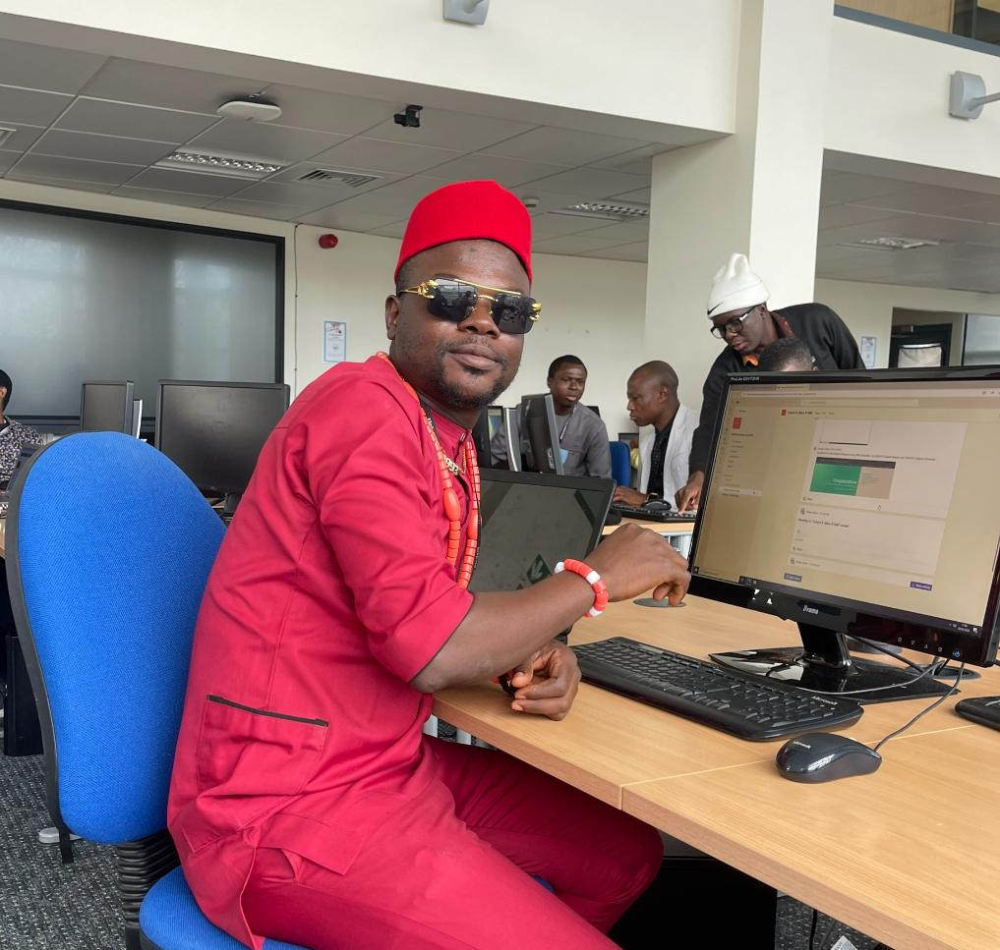
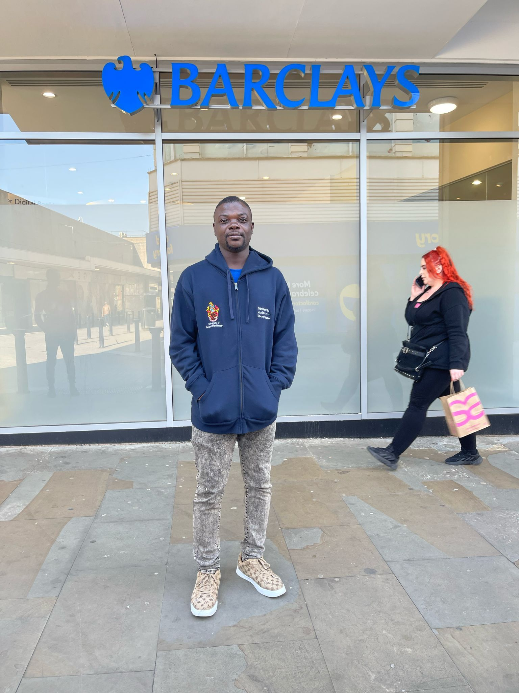
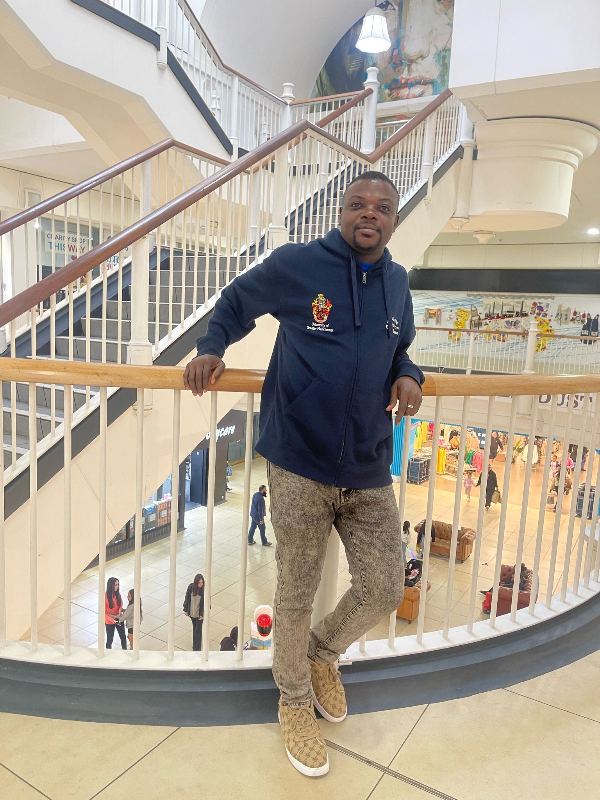
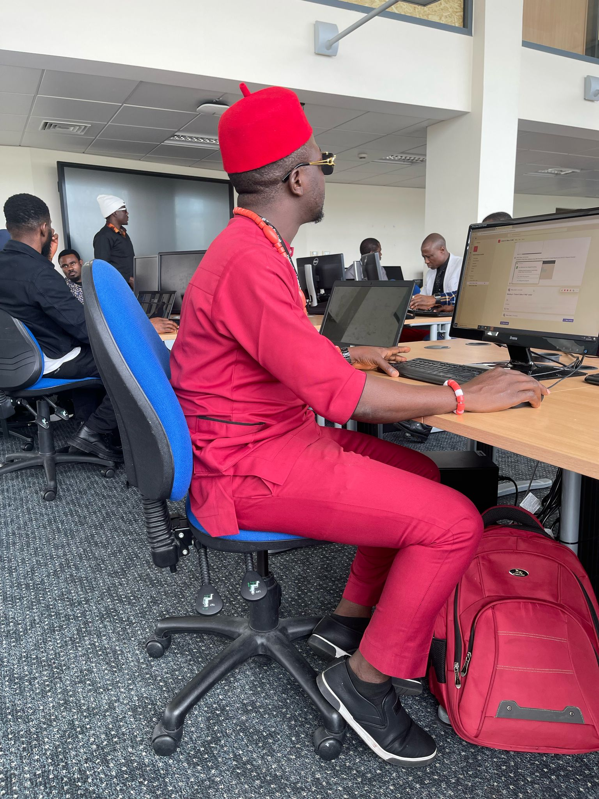

Welcome to My Portfolio Project Journey!
Hello and welcome! I'm Nweze Isaiah Ifeanyi, A passionate Software Engineering Master's Student at the University of Greater Manchester, United Kingdom.
I am also an ALX Africa alumni focused on back-end development. Here on my portfolio,
you'll find a collection of projects that showcase my skills, creativity, and growth throughout my ALX learning experience.

Engr. Nweze Isaiah Ifeanyi (Back-end Developer)



What You'll Find Here
Explore my projects to see how I've applied my learning to real-world scenarios.Each project represents a milestone in my journey, demonstrating not only technical proficiency
but also problem-solving abilities and attention to detail.
View My Project on GitHub
Why I Chose ALX
ALX has provided me with a unique opportunity to hands-on approach, mentorship,community fellowship and collaborative learning experience. It has equipped me with the tools and
knowledge necessary to tackle challenges head-on and create meaningful solutions.
To read more about ALX Africa Visit ALX Website
Get in Touch
Whether you're here to explore my projects, collaborate on ideas, or just say hello,I'd love to connect. Feel free to subscribe to my channel: Subscribe to my Channel
or connect with me on LinkedIn:
Visit my LinkedIn Profile
Thank you for visiting, and I hope you enjoy browsing through my portfolio as much as I've enjoyed creating it!